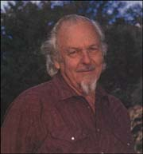

At a time when the entire Western world is looking forward - to a new year, a new century, a new millennium - I'd like to challenge this nation's physicians and pharmacists to do just the opposite: look back. It's my belief that the future of medicine is rooted in the past, before chemists undertook to synthesize synthetic silver bullets for all that ails, and before pharmaceutical companies hitched our collective health to what has become for them a multibillion-dollar wagon.
I've spent close to 40 years (most of those in the employ of the United States Department of Agriculture) investigating the medicinal properties of plants, sampling most everything green from the north woods of Maine to the south woods of sweet home Alabama and from Amazonia to Africa, Asia and Australia. What I've learned has convinced me that modern medicine's blind faith in pharmaceutical "smart missiles" - drugs designed to strike narrowly defined disease target can oft times be misguided. I were a betting man, I'd put my money on the herbal alternative to be cheaper, safer and overall better for you than its synthetic counterpart. Trouble is, doctors, drug companies, even the federal Food and Drug Administration (FDA) have so far seemed unwilling to take that bet.
Open most any issue of the Journal of the American Medical Association (JAMA) and you'll read about comparative head-on trials of various drugs: Hytrin (restricted) versus Proscar (restricted) for benign prostatic hypertrophy (enlarged prostate), dihydroergotamine versus sumatriptan for acute migraine and .so on. Omitted from virtually all of these studies, however, is any consideration of the herbal alternatives, regardless of their potential.
The National Cancer Institute is even now funding a comparison of the drugs tamoxifen and raloxifene to see which is the better breast cancer preventative. Never mind that tamoxifen increases a woman's risk for uterine cancer and blood clots. Meanwhile, the American Cancer Society (ACS) continues to insist that there's no proof that any food or diet helps. How can it know? Until tamoxifen and raloxifene are compared to standardized bean soup (40 milligrams of isoflavones per cup) and/or to kudzu (our best source of the natural phyto estrogen, daidzein) no one knows for sure - not you, me or the ACS.
Likewise, we can't know whether or not red beans and kudzu are, as I suspect, effective at warding off osteoporosis (though it's interesting to note that the pharmaceutical alternative. ipriflavone, is convened to daidzen in the stomach.) What I do know is that if I exercise enough growing my red beans and picking my kudzu, I just might prevent osteoporosis.
I'm also rather convinced that, when it comes to combating migraines, oral feverfew, even with its own potential side effects (i.e., canker sores, gastrointestinal distress), is safer, if not more effi cacious - at least at prevention, and prevention is better than cure - than either of the leading, competing pharmaceuticals. Still, it'd be nice to have the clinical data to prove it. A 1996 study sponsored in part by Sandoz Pharmaceuticals, showed dihydroergota mine (a Sandoz product) to be better than its competitor, sumatriptan. How easy and what good public relations it would have been for Sandoz to include the cheaper herbal alternative, standardized feverfew extract, in its study for the benefit of the more than 43 million uninsured Americans for whom conventional pharmaceuticals are priced out of reach. If feverfew proved safe and even modestly efficacious, Sandoz and America would be all the better off.
In my lectures over the past decade I have stridently campaigned for comparative trials of medicinal herbs and their corresponding pharmaceuticals. It's become one of the main raisons d'etre of my sunrise years. While herbal remedies may not be for everyone, every time, they're well worth considering:
If you are one of the nearly 20% of Americans who can't afford prescription drugs - or the doctors who prescribe them.
If your last visit to the doctor took less time than your last trip through the car wash. Today's HMO physicians spend on average six minutes with each patient. And, worse still, they don t seem to be listening: One study showed male doctors interrupting patient responses after 14 seconds, while female doctors cut in after 40.
If you have reason to doubt your diagnosis. Even with today, advanced diagnostic technologies, some 50% of Lyme disease diagnoses are wrong, while an estimated 20% of adult cough are believed to be undiagnosed pertussis, or whooping cough.
If you have comorbid factors, or more than one thing ailing you (most of us do).
If you are deficient in any essential vitamin, mineral or other nutrient (most of us are).
If you fit into any or all of the above "iffy" categories, the herbal alternative may be right for you. Herbs are accessible, largely affordable and don't require an expensive visit to your doctor.
More important, most every herb contains thousands of biologically active phytochemicals, a few or dozens or hundreds of which will, if purposefully selected and ingested in the right amount, help to prevent, treat or reduce the symptoms of whatever's troubling you, plus alleviate some or all of your comorbid factors, diagnosed or not.
And, as an added bonus, the "herbal shotgun" provides many of the nutrients missing from or underrepresented in the average American diet. If it's an essential element mineral, amino or fatty acid, precursor peptide, enzyme or vitamin you're lacking, a little and most herbs give you a little, more of most or all of the above can go a long a way.
But perhaps the most compelling reason to turn to herbs is that our genes and the genes of Earth's friendly flora have enjoyed a lengthy history together - history that began several million years ago near the Great Rift Valley, where our ancestral genes first met the ancestral genes of African composites ... some edible, some medicinal, some poisonous. Herbs are nothing if not biologically familiar.
They are also biologically complex. What is perhaps one of the simplest herbs, the four chromosome Arabidopsis, has some 20,000 genes, each coding for a master chemical controlling one or more physiological activity (amazing when you consider humans, in all of our conscious glory, have only about 100,000 genes).
Among these tens of thousands of phytochemicals we are likely to find dozens that are beneficial to our health, as well as a few that, in large quantities, could be detrimental. But familiarity breeds discretion. The human body, with its proclivity for homeostasis, has through the ages become adept at sequestering the compounds it needs, and at the proper levels, while filtering out the rest - and with no guidance from you, your doctor or your pharmacist.
Conversely, the body hasn't an innate clue how to process the physician's silver bullet, which likely contains one or a few synthetic chemicals never before experienced by you or your ancestors. And even if it is a phytochemical drug - some 25% to 40% of all pharmaceuticals are plant derived - its active compounds may behave very differently outside of their "natural habitat" and in proportions not known in the wild. The human body, exposed to unnatural chemicals or natural chemicals in unnatural concentrations, is too-often stumped, sometimes with dire consequences.
A quarter to half of all Americans (depending on whose statistics you believe) rely on herbs or herbal supplements to prevent or treat one affliction or another, or simply to promote good health. Last year some 40 people died from the misuse of herbs, and while that's 40 too many, it does not begin to approach the percentage of casualties caused by HMO-covered physicians and their FDA-approved pharmaceuticals.
Even if we assume for argument's sake that 100% of us are taking at least one synthetic drug (even I took seven Aleve pills in 1998 for a trick knee) that would mean that between 80 and 120 deaths a year would put conventional pharmaceuticals on a par with the herbal alternatives. Yet, according to two different articles published in JAMA in the last two years, prescription drugs kill nearly a thousand times that many people every year. And we all pay the price, with the estimated costs of drug-related morbidity and mortality in America running dose to $150 billion annually.
Meanwhile, many HMOs still refuse to cover the costs of "unproven"alternat ive therapies. What they ignore, and many of their members may not know, is that plenty of modern medical practices also have not been proven to improve prognosis (e g., angioplasty) and in fact of the in some cases have been shown to do more harm than good. An estimated 8,000 to 20,000 lives are lost each year to commonly, prescribed nonsteroidal anti-inflammatory drugs (NSAIDs) alone. ( NSAIDS, including aspirin, ibuprofen and naproxen, are capable pain relievers, but prolonged use can lead serious and sometimes fatal damage to the stomach, intestines and kidneys.)
Moreover, according to one JAMA published study, 3 of every 1,000 patients admitted to U.S. hospitals die from the medicine they receive there - whether from a hospital-contracted infection, a fatal drug reaction or some other unforeseen iatrogenic injury.
How, you ask, can all of this be happening under the ever watchful eye of our assiduous FDA? Surely you've heard the expression: "Only time will tell." Of 198 FDA-approved drugs reviewed be tween 1976 and 1985, 51.5% were re called and relabeled to warn against side effects that somehow escaped notic enduring the seven to twelve years of clinical trials generally required before a drug is made available to you and me. Six were found to be so seriously flawed, they were eventually pulled from the market entirely.
More recently, between September 1997 and 1998, five prescription medications - including both halves of that now infamous deadly diet duo fenfluramine and phenter mine, or "fen-phen" were re called due to unexpected adverse reactions.
Now, admittedly, fenfluramine was newer intended as a weight-loss drug, nor was it approved for long-term use (its inclusion in fen-phen is what is known as an "off-label" application). But even when taken appropriately, market drugs still rank, according to a recent JAMA -published study, among the top ten causes of death in the United States.
Faced with skyrocketing health-care costs and uncertain outcomes, Americans are increasingly turning to alternative medicine: In 1990 nonconventional practitioners in the U. S. saw a total 425 million visits - 39 million more than did all of the nation's primary care physicians combined. Why are more and more of us paying out of pocket for nontraditional therapies, when our insurers will cover much of the cost of traditional care? Maybe we are getting helped more or hurt less or both.
My faith in what I have come to call the "Green Pharmacy" is tied to the shared dependence that all of life -human, animal and plant - has on chlorophyll, the molecular powerhouse that drives the process of photosynthesis. Chlorophyll enables plants to turn carbon dioxide and water into life-sustaining sugars, coincidentally ensuring the oxygen we breath, the food we eat and the natural fibers that still clothe many of us.
Given that plants provide our very sustenance - that we depend on them to fill our lungs and our stomachs doesn't it only make sense that this green lifeblood should capably fill our medicine chests too? After all this dependence is no accident; it is the result of millions of years of co-evolution, during which our genes and plant genes developed a shared chemical language, engaging in many of the same life-giving reactions.
By contrast, synthetic medicines have been around for only about 200 years. They are relative strangers (or strange relatives) to our genes and consequently produce more ill and sometimes fatal side effects than the more genetically familiar herbal alternative. Is there a place for conventional pharmaceuticals? Yes. If you suffer from a single ailment that has been correctly diagnosed, the physician's monocompound silver bullet will likely help you and may in fact be the best thing for you. But if your diagnosis is off or other comorbid factors are present, that silver bullet may well miss one or more of its marks.
Some years ago, I was privy to a conversation among a group of medical researchers who were weighing potential target sites for a new class of arthritis drugs. One argued rather obviously that the drugs should target susceptible receptor sites. "Which one?" countered another, pointing with frustration to the sheer number of potential targets. Someone else used the word "chaos" to describe the hundreds of organic chemicals that can influence the hundreds of physiological reactions that play a role in the many kinds of arthritis. These M.D.'s were in search of a pharmaceutical smart missile that would impact just one or a very few of these reactions. Trouble is, its hard to aim that precisely, and even if you hit the target, there's no telling what effect the reverberations of that shot will have on neighboring reactions.
One of the scientists posed what I found a particularly apt analogy: A drug gunning for a disease target is, he suggested, like pelican diving for fish. (A school of fish is, in turn, like a well-coordinated group of homeostatic equations, functioning as a unit, yet strengthened by the numbers.) The pelican may come up with one, perhaps a couple, fish, but no one bird will ever get the whole school. The Green Farmacy' s synergetic shotgun behaves more like a flock of coordinated pelicans, work ing in concert to conquer the school. I'd bet that m any arthritics would benefit, for instance, by trading in some of their steroids and analgesics for turmeric, a spice rich in curcumin, a natural cyclo-oxygenase (COX-2) inhibitor that seems to be safer than the celebrated new COX-2 inhibiting pharmaceuticals, Celebrex and Vioxx. (COX-2 is an enzyme produced in injured tissue that causes pain and swelling. Drugs designed to inhibit this enzyme burst onto the market in late 1998, beginning with Celebrex. Already this new "miracle as pirin" has had to be relabeled once to warn against unforeseen complications in patients also taking blood thinners such as Warfarin. But that hasn't slowed physicians' pens: By last May, just five months after its approval, 4 million prescriptions of Celebrex had been dispensed nationwide.)
While admittedly neither the pharmacy nor "farmacy" has come close to a cure for arthritis and its crippling effects, I'd wager that a complex herbal shotgun like turmeric - with its thousands of life-sustaining chemicals - is going to leave fewer fish in the water than would its synthetic single-shot counterpart.
After lecturing to more than ten groups of physicians, as well as dozens of times to nurses, nurse practitioners, pharmacists and pharmaceutical firms, I have been joined by several physician colleagues in compiling a tabulation of herbal alternatives for specific ailments that deserve scientific comparison with the generally recommended pharmaceutical (see tables starting on page 30). Moreover, I have located sponsors willing to offer a modicum of support, as well as standardized herbal preparations comparable to those now approved in Europe. This support will be offered to physicians who share my belief that until such trials have been performed we cannot be sure the physician's pharmaceutical is the best medicine. (I invite interested physicians to contact me at jimduke&cpcug.org.)
I want the best medicine for myself, my family and for America if we can afford it. But today, we don't know which is best. Let's change that. Talk with your physician if you are herbally inclined. Tell him or her you would like to be a guinea pig in the trial of the new millennium, the herbal David versus the pharmaceutical Goliath. She or he might he willing to include you in the herbal half of double-blind placebo-controlled trials comparing the herb with the pharmaceutical.
I can even foresee David and Goliath putting down their weapons and reaching a compromise: pharmaceutical firms could team up with herbal firms, sharing in the "green" (in more ways than one) should the herb prove marginally useful or even better than the synthetic drug. If the pharmaceutical firms don't wish to participate, then the National Institutes of Health should step in to perform the comparative trials. This way we might offer affordable herbal help and hope to the impoverished 20% of our population.
While I agree in spirit with the age-old adage, in truth it takes more than an apple a day to keep the doctor away. Throw in some regular exercise, about nine more servings of fruits and vegetables and some basic herbs or herbal supplements, and now you've got a recipe for long-lasting good health. At age 70 and still (knock wood) fit as a fiddle, I rely in large part on the following 13 herbs to keep not only the doctor, but also all manner of aches and ailments at bay.
Bilberry: A potent antioxidant and anti-inflammatory, this berry can help to slow or prevent deterioration of the eyes. It can be eaten fresh or dried, or taken as an extract in liquid or pill form. I usually get mine in standardized capsules, but when blueberries are in season, they work too.
Celery Seed: I take this common spice daily to help ward off gout and alleviate arthritis pain. With nearly two dozen anti-inflammatory compounds, it packs quite a punch. Add dried seed to soups, stews or tomato sauces, or take two 450 milligram capsules twice a day before meals.
Echinacea and Garlic: I rely on this dynamic duo (the first as a supplement, the latter fresh from the garden or produce market when I'm home, in pills on the road) to protect against colds, flu and cancer. Garlic also gets points for lowering blood pressure and reducing "bad" cholesterol.
Saw Palmetto: 1 take this herbal supplement to protect against the prostate trouble that strikes two of every three men over age 65. (German clinical trials have already shown it to be as effective and considerably safer than the leading pharmaceutical alternative.) I also take a small dose of Evening Primrose to work with my saw palmetto at reducing prostatic inflammation.
Milk Thistle : I turn to this proven detoxifier to guard against or slow down deterioration of the liver. Take the dosage recommended for standardized extracts.
I rely on Gingko supplements (standardized extract taken at la beled dosages) to protect and preserve my brain, as well as peripheral circulation. (In patients with Alzheimer's, it may even help to slow the progress of the disease.)
When stress gets the upper hand, I lower the book - and my tension level - with a strained tea of Hawaiian Kava or else I take a standardized extract of kava kava as directed. Never undervalue the ability to relax the body: stress wreaks havoc on the immune system, opening us up to a whole host of health problems.
St. John's Wort serves as an immune system- and mood-booster, particularly during the short days and long nights of winter, when, like millions of Americans, I sometimes suffer the mild blues associated with seasonal affective disorder (SAD). On those rare days, if I can't get to the tropics, I find sunshine in the standardized St. John's wort pill.
Horse Chestnut helps keep painful varicose veins from forming and helps to prevent swelling of my arthritic joints. While I don't take it daily, I probably should, in standardized extract form as recommended.
Turmeric, the zesty root in curry, works like those expensive miracle aspirins (COX-2 inhibitors) for arthritic and other inflammations, only it's much cheaper and possibly much safer. Use as a spice for cooking or take capsule-standardized curcumin (the active compound in turmeric) as directed.
And finally, standardized Hawthorn Extract is my first-choice heart guard - and a must for cardiac-prone people given that heart disease is the number-one killer in America, claiming lives at the rate of about one a minute.
For more information on the healing properties, dosages and potential side effects (both good and bad) of the above herbs, check out Dr. Duke's new book, Dr. Duke's Essential Herbs (Rodale Press, October 1999).
The accompanying tables (next page) show potential herbal alternatives to commonly prescribed and over-the-counter pharmaceuticals and synthetics for more than 85diseases we confront. All the herbal products listed have been used safely by at least some physicians in this country and are recommended by some physicians here and many physicians in Europe. Some are GRAS (generally recognized as safe) herbs and many you will recognize as familiar foods. I have not presented any herbs in this table that I would be afraid to test myself or to ask female members of my family to test.
You may find it entertaining and informative to ask your physician what pharmaceutical he or she would recommend for a given disease included on the chart. Then you can really entertain yourself by asking hurt or her if there is any proof that the recommended drug is better than the herbal alternative. Since our FDA rarely accepts data from overseas, we will continue to wallow in our own ignorance. Until comparative, U.S. trials have been performed, neither you nor I, nor your nor my physician, nor any pharmacist can say for sure that the pharmaceutical is better than the herbal alternative.
My resolution for the New Year (and century and millennium) is to catalyze these comparative head-on trials here in America. And my timing may just be right: I am delighted to report that Duke University (no relation) is involved in a three-year clinical comparison of Zoloft (sentralin) and St. John's wort (hypericum). This is the first big American comparison of a top-selling drug with a top-selling herbal extract. Let me predict the outcome, rightly or wrongly: The herb will prove to be as (or almost as) effective, but will have fewer side effects. That is what German researchers found when comparing saw palmetto with Proscar(restricted) (finasteride), the first FDA-approved pharmaceutical for treating enlarged prostate, and that is the prediction I will venture for most of the couplets, the David's versus the Goliaths. America deserves and needs the best medicines. Until the better herbals have been compared with the better pharmaceuticals, we simply don't know that we have the best drugs.
|
|
 |
|
|
|
|
|